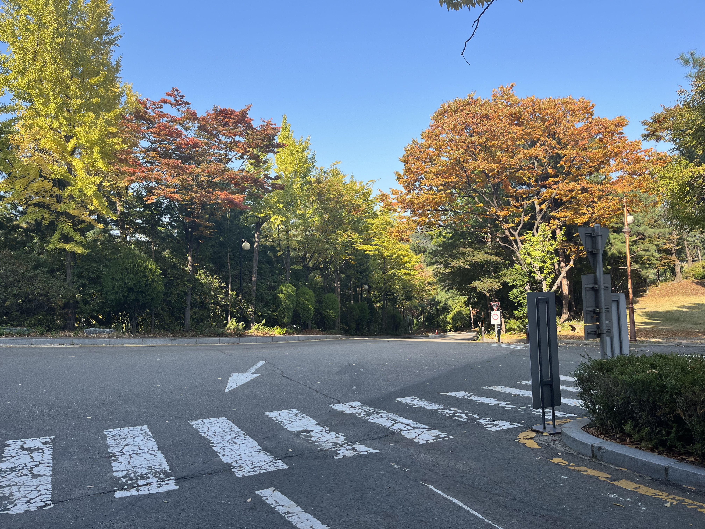

Road

나의 핫스팟
경사가 있고 굽이진 길이 이어지는 곳입니다. 길을 걸으면서 주변 풍경을 볼 수 있습니다.
공부하다 잠시 쉬면서 걸어 다니고 싶을 때 찾아가는 장소입니다.
Gym

나의 핫스팟
K관 1층 한쪽에 있는 운동 공간입니다.
운동을 하면서 체력을 관리하고 공부 중간에 기분을 전환할 수 있습니다.
Dining Hall

나의 핫스팟
B관 1층과 2층에 있는 식당입니다.
학생과 교직원이 식사를 할 수 있고, 공부하다가 식사를 하며 잠시 쉬어갈 수 있습니다.